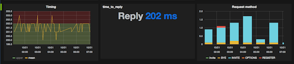
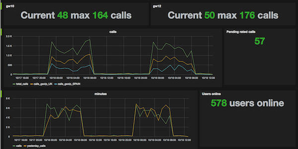

I remember when I read about Graphite. I was reading that Vimeo used it for making realtime monitoring in their projects and reporting for all the team. I got a chance to test with my local apps and after a few days I started to love graphite.
I start to use graphite in my web apps. After few weeks I needed to monitor a new feature deployed in one of our kamailio. The first time I used mod_python+statsd, but I realise that using python module was not the best way so I write statsd module that work native with kamailio.
I made this module, after 7 years working with Kamailio, I read/modified a lot of modules, but I never had a chance to write a new one.
Kamailio mod statsd provides just four functions. All of those functions are damn easy to understand but if you are not familiarized with this world, I would recommend you to check this posts:

If you want to test the module without a lot of trouble, the recommended way in my opinion is to use this Docker deploy (Grafana is the best dashboard for graphite).
And after have it installed, go throught the READAME.md file:
Kamailio statsd parameters:
- IP: Statsd listen IP.
modparam("statsd", "ip", "127.0.0.1")
- PORT: Statsd listen port.
modparam("statsd", "port", "8125")
Kamailio statsd functions:
- Set: counting unique occurrences of events between flushes, using a Set to store all occurring events.
route [customer_credit]{ statsd_set(“customer."+$avp(customer)+”credit”, $var(credit)) }
Gauge: A gauge simply indicates an arbitrary value at a point in time. You can use like this:
route [gauge_method]{ statsd_gauge("method.count"+$rm, “1”); if($avp(s:prepaid)) statsd_gauge("customer.prepaid", “+1”); }
Timing: You can use timing options in any function, or specific route, with code like this:
route [long_mysql_query]{ statsd_start("long_mysql_query"); sql_query("ca", "select sleep(rand()/4)", "ra"); statsd_stop("long_mysql_query"); }
Timers (statsd_start, statsd_stop) are an incredibly powerful tool for tracking application performance.
Counters: You can use statsd_incr or statsd_decr for increment/decrement a counter. For example I used a lot the counter with GeoIP module or log any specific feature in the platform (Prepaid user, new features launch).
route[country]{ if(geoip_match("$si", "src")){ statsd_incr("country."+$(gip(src=>cc))); } }
You can also check how many failure are coming from your providers, gateways, etc.
After that, you can use grafrana (Port 8081 if you are using the dockerfile) and add a new graph with your information. The first days, you will feel lost, after a few weeks I'm sure that you will love it ;-)
If you have any trouble, you can ping me in my email, or in twitter @eloycoto
You can get the source of the statsd module in github: https://github.com/eloycoto/statsd